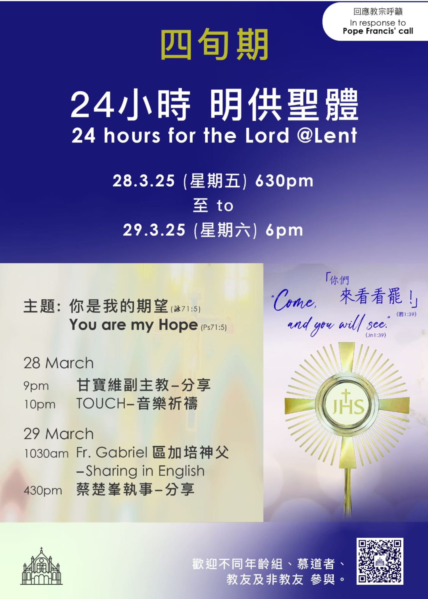
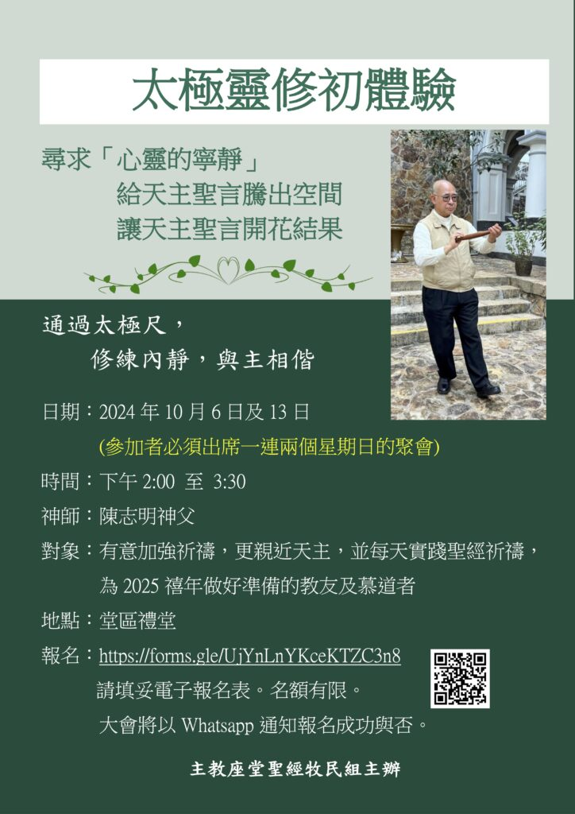

你們來看看罷!
擁抱禧年，打開心扉，
懷着希望，奉獻一切！
在那恩寵滿盈的寶座裡，尋求祂寬恕憐憫，領受安慰及修和之恩。
讓聖神賜我們堅定的信德，本著愛而嚮往與祂契合的精神，展開生命的新篇章。
24 小時明供聖體！歡迎不同年齡組、慕道者、教友及非教友參與，3月28/29日見!

太極靈修初體驗
香港聖母無原罪主教座堂聖經牧民組
報名：https://forms.gle/UjYnLnYKceKTZC3n8。
加入我們的太極靈修體驗！10月6日至13日，讓心靈得到釋放，與大家共享靜謐時光。報名鏈接在下方，名額有限，快來參加

< 1 2 3 4 5 6 7 8 9 > Next Last